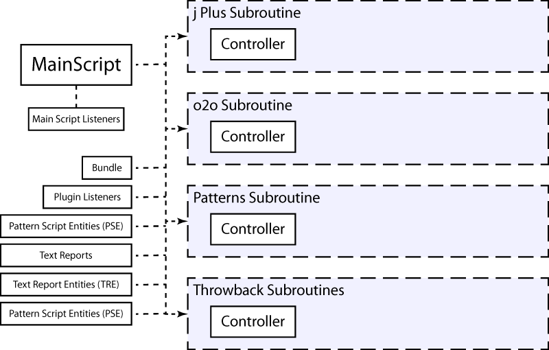
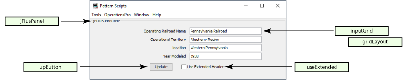
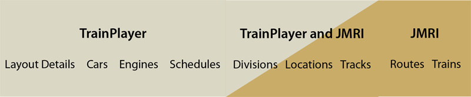
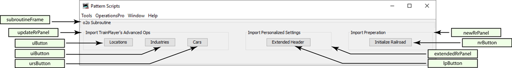
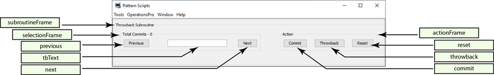

Le plugin Pattern Scripts pour JMRI est une suite de sous-programmes pour JMRI Operations Pro. L'utilisation de ce plugin est documentée dans la liste suivante de vidéos YouTube. Les vidéos sont enregistrées en anglais.
Une vue d'ensemble de ce plugin
Comment ajouter ce plugin à JMRI
Le sous-programme o2o - Utiliser JMRI avec le logiciel de modélisme ferroviaire TrainPlayer©
Le sous-programme Patterns - Vue d'ensemble
La sous-routine Patterns - Démonstration dans l'industrie
Le sous-programme Patterns - Démonstration dans un chantier naval
Le plugin Pattern Scripts peut être considéré comme un cadre pour l'hébergement de sous-programmes (ou scripts) pour JMRI Operations Pro qui nécessitent une interface utilisateur. Ce plugin est livré avec quatre sous-programmes : jPlus, Patterns, o2o et Throwback. Un modèle est également inclus pour servir d'échafaudage à quelqu'un qui souhaite ajouter son propre sous-programme.
Des sous-programmes peuvent être ajoutés ou supprimés individuellement selon les besoins.
En outre, chaque sous-programme peut être affiché ou masqué selon les besoins, à partir du menu Outils.
Chacune des fonctions des sous-programmes n'est disponible que lorsque le plugin est en cours d'exécution et que le sous-programme a été inclus. Par exemple, les détails ferroviaires étendus n'apparaîtront dans les rapports que lorsque le plugin Pattern Scripts a été lancé et que jPlus a été inclus. Pour désactiver les fonctions des plugins, fermez (et non pas cachez) la fenêtre.
Le tableau suivant montre la structure du code de ce plugin.
">OperationsPatternScripts.MainScript.View.makePatternScriptsWindow()

Chaque profil JMRI dispose de son propre fichier de configuration, nommé configFile.json, qui se trouve dans le dossier operations et qui est utilisé pour fournir des paramètres personnalisés pour chaque profil et enregistrer les entrées de l'utilisateur.
Sélectionnez Outils/Modifier le fichier de configuration. Les valeurs modifiables par l'utilisateur se trouvent dans les sous-sections intitulées "US" pour User Settings. Les autres valeurs ne doivent pas être modifiées. Si une erreur est commise lors de la modification du fichier de configuration, le plugin supprimera le fichier et en fournira un nouveau pour recommencer en utilisant les valeurs par défaut. Dans le pire des cas, le plugin peut se planter. Si cela se produit, sélectionnez Outils/Redémarrer à partir de la valeur par défaut.
The following are user editable values for the plugin.
For colors, any of the A, B, G, R values can be changed, between 0 and 255.
Also, new colors may be added.
"US" : {
"OC" : true, Open Console (Ouvrir la console) : ouvre la console du système au démarrage du plugin.
"CD": { Définitions de couleurs, un ensemble de couleurs prédéfinies.
"BLANCH": { Le nom de la couleur.
"A": 210, Valeur alpha (transparence).
"B": 255, La valeur de la composante bleue.
"D": "Lighten a bit", Une description de la couleur.
"G": 255, La valeur de la composante verte.
"R": 255 La valeur du composant rouge.
},
"GLOOM": {
"A": 10,
"B": 0,
"D": "Darken a bit",
"G": 0,
"R": 0
},
"DUST": {
"A": 255,
"B": 218,
"D": "Light tan",
"G": 242,
"R": 252
},
"FADED": {
"A": 255,
"B": 245,
"D": "Light purple",
"G": 225,
"R": 237
},
"LICHEN": {
"A": 255,
"B": 244,
"D": "Light green",
"G": 255,
"R": 236
},
"PALE": {
"A": 255,
"B": 250,
"D": "Light blue",
"G": 243,
"R": 237
},
"RASH": {
"A": 255,
"B": 224,
"D": "Light red",
"G": 208,
"R": 240
},
"colorA" : "DUST", Le nom de la couleur à utiliser lorsque colorA est appelé.
"colorB" : "FADED", Le nom de la couleur à utiliser lorsque colorB est appelé.
"colorC" : "RASH" Le nom de la couleur à utiliser lorsque colorC est appelé.
}
},
Le sous-programme jPlus ajoute des détails ferroviaires étendus aux rapports générés par ce plugin. Ces détails sont affichés dans l'en-tête des rapports de motifs et des listes de commutation. L'en-tête du serveur JMRI n'est pas modifié.
Pour utiliser ce sous-programme, saisissez les données appropriées dans la zone de texte et cliquez sur mettre à jour. Il n'est pas nécessaire de saisir tous les champs. Pour inclure les détails étendus dans un rapport Operations Pattern Scripts, cochez la case "Utiliser l'en-tête étendu". Les champs étendus sont les suivants :
Il s'agit du chemin de fer qui possède ou exploite les voies modélisées. N'importe quel nom peut être saisi, tel que "PRR" ou "BN UPRR Joint" ou "G&D".
Il s'agit du nom du chemin de fer pour la partie modélisée, par exemple "Long Beach Intermodal Terminal" ou "Salem Glass Works Branch".
Lieu où se trouve le chemin de fer, par exemple "The Great Divide" ou "The Bronx, New York".
L'année sur laquelle le modèle de chemin de fer est basé, c'est un miroir de 'JMRI/OperationsPro/Settings/Year Modled'. L'un met à jour l'autre.
Sous-routines.jPlus.View.ManageGui
">The jPlus section of the configuration file has no user editable settings.
La sous-routine ops to ops (o2o) est un groupe d'utilitaires conçus pour être la colle qui permet à JMRI Operations Pro d'être le moteur d'opérations pour TrainPlayer©. L'idée est d'étendre la capacité de la fonction Advanced Ops de TrainPlayer© pour inclure la flexibilité d'Operations Pro, tout en éliminant le fastidieux maintien de la synchronisation de deux bases de données.
o2o exporte automatiquement un train construit ou une liste d'aiguillage vers TrainPlayer lorsque la fenêtre des scripts de modèle est ouverte et que le sous-programme o2o est inclus. Pour désactiver l'exportation o2o, supprimez o2o de la fenêtre des scripts de modèle ou fermez (ne cachez pas) la fenêtre des scripts de modèle.
Avant d'appuyer sur l'un de ces boutons, exportez votre schéma de TrainPlayer. Les sous-routines QuickKeys pour TrainPlayer doivent être ajoutées à TrainPlayer avant que votre schéma de TrainPlayer puisse être exporté. Reportez-vous à la documentation sur les Quick Keys.
La page des clés rapides sur GitHub
Initialiser le chemin de fer - En appuyant sur ce bouton, vous effacez tout JMRI existant afin qu'un nouveau chemin de fer JMRI puisse être construit à partir de l'exportation TrainPlayer. Les fichiers XML Routes et Trains sont sauvegardés, les autres sont initialisés.
Importer des emplacements - En appuyant sur ce bouton, vous créez un nouveau chemin de fer JMRI à partir de l'exportation de TrainPlayer. Si vous utilisez jPlus, les données étendues que vous avez saisies dans la mise en page de TrainPlayer seront ajoutées. De plus, lorsque des modifications sont apportées à l'onglet Emplacements de la fenêtre Opérations avancées de TrainPlayer, vous pouvez appuyer sur ce bouton pour mettre à jour votre mise en page.
Importer les industries - Appuyez sur ce bouton lorsque vous avez fait des changements dans l'onglet Industries des opérations avancées de TrainPlayers, cela mettra à jour vos embranchements. Tous les changements que vous avez faits à votre matériel roulant seront également mis à jour.
Importer des wagons - Appuyez sur ce bouton lorsque vous avez changé le matériel roulant de votre réseau.
Le tableau ci-dessous indique quel programme gère quels éléments.
">Sous-routines.o2o.View.ManageGui
">
The o2o section of the configuration file has the following user editable settings.
The following are TrainPlayer car code lists for types of equipment, based on default TrainPlayer values.
Custom car codes added to TrainPlayer would also be added here.
"US" : {
"XE" : [ Liste des codes de voitures TrainPlayer pour les moteurs.
"E",
"ES",
"ED",
"EE",
"ET"
],
"XP" : [ Liste des codes de voitures TrainPlayer pour les voitures de passagers.
"EP",
"CA",
"CS",
"D",
"DA",
"DB",
"DC",
"DL",
"DO",
"DP",
"DPA",
"P",
"PA",
"PAS",
"PB",
"PBC",
"PBO",
"PC",
"PL",
"PO",
"PS",
"PSA"
],
"XX" : [ Liste des codes de wagons TrainPlayer pour les wagons à bagages.
"B",
"BE",
"BH",
"BM",
"BMR",
"BMT",
"BP",
"BR",
"BX",
"MA",
"MB",
"MR"
],
"XC" : [ Liste des codes de voiture TrainPlayer pour les cabines.
"N",
"NM",
"NE"
],
"XM" : [ Liste des codes de wagons TrainPlayer pour le matériel MOW.
"M",
"MWB",
"MWC",
"MWD",
"MWG",
"MWF",
"MWK",
"MWR",
"MWX"
]
},
Le sous-programme Modèles permet de générer des rapports de modèles pour les voies d'une même localité. De plus, les wagons peuvent être déplacés d'une voie à l'autre à l'intérieur d'une même localité. En option, si un wagon est déplacé sur un embranchement, l'horaire de cet embranchement peut être appliqué.
Si vous utilisez des divisions, le menu déroulant Division affichera une liste de divisions. En sélectionnant une division, la liste des emplacements de cette division s'affichera dans le menu déroulant Emplacement.
Lorsqu'un lieu est sélectionné, une liste de cases à cocher s'affiche, une pour chaque piste du lieu sélectionné.
La liste des pistes peut être filtrée en activant ou désactivant la case à cocher "Pistes de triage uniquement".
Les pistes individuelles peuvent être sélectionnées en cliquant sur la case à cocher située à côté du nom de la piste.
Lorsque des pistes sont sélectionnées, le fait d'appuyer sur le bouton Interrogation des pistes permet d'afficher des informations sur l'inventaire des pistes sélectionnées. Ces informations sont imprimables.
Une fois les voies sélectionnées, le fait d'appuyer sur le bouton "Set Rolling Stock to Track" ouvre une liste de travail pour chaque voie sélectionnée.
Pour chaque fenêtre de la liste de travail, une rangée de boutons, un pour chaque piste de l'emplacement sélectionné, s'affichera. En appuyant sur l'un des boutons de piste, le nom de la piste sera chargé dans la mémoire.
Pour n'importe quelle ligne de matériel roulant dans le panneau Voitures à..., cliquer à l'intérieur de l'une des zones de texte collera le nom de la voie sélectionnée dans la zone.
En appuyant sur le bouton Liste de commutation, une liste de travail sera générée pour cette piste. Cette liste est imprimable. Si o2o est utilisé, une liste de travail TrainPlayer sera également générée.
En appuyant sur le bouton "Set Rolling Stock to Track", une fenêtre s'ouvre.
La fenêtre contextuelle ajoute l'option d'utiliser un horaire d'éperon et de modifier la capacité de la voie.
En appuyant sur le bouton "Set Cars", le matériel roulant de la liste de travail sera déplacé sur la voie sélectionnée, sous réserve des restrictions de type.
Sous-routines.Patterns.View.ManageGui

Subroutines.Patterns.ControllerSetCarsForm.CreatePatternReportGui.makeFrame()

Tous les rapports de motifs commencent par la création d'un fichier json. Ces fichiers sont créés par ce plugin et sont écrits dans le dossier jsonManifests. Ils suivent le format illustré :

En fonction de la tâche, l'un ou l'autre des fichiers json sera ensuite écrit dans un fichier texte Pattern Report ou Switchlist ou exporté vers TrainPlayer sous la forme d'un fichier WorkEvents csv.
The Patterns section of the configuration file has the following user editable settings.
"US" : {
"DS" : "Not Assigned", Indicateur de destination lorsque le champ est vide.
"DT" : "Not Scheduled", Indicateur de la voie de destination lorsque le champ est vide.
"FD" : "Unconsigned", Indicateur de destination finale lorsque le champ est vide.
"FT" : "No Waybill", Destination finale et indicatif de la voie lorsque le champ est vide.
"EH" : "Available", Manutention prolongée, indicatif de cas particulier pour le moteur, le passager et le fourgon de queue.
"SL": [ Sort Locomotives. Les listes de locomotives sont triées en fonction des champs saisis ici*.
"Model"
],
"SC": [ Sort Cars. Les listes de voitures sont triées en fonction des champs saisis ici*.
"Load_Type",
"FD&Track"
],
"AW": { Largeur de l'attribut, IE dans un rapport, le champ Nombre dispose de 7 caractères.
" ": 1,
"Road": 5,
"Number": 7,
"Type": 6,
"Length": 7,
"Color": 6,
"Weight": 7,
"Comment": 15,
"Division": 15,
"Location": 9,
"Track": 6,
"Destination": 15,
"Owner": 20,
"Model": 5,
"DCC_Address": 10,
"Consist": 8,
"Load_Type": 1,
"Load": 6,
"Hazardous": 10,
"Kernel": 7,
"Kernel_Size": 3,
"Dest&Track": 27,
"Final_Dest": 11,
"FD&Track": 23,
"SetOut_Msg": 12,
"PickUp_Msg": 12,
"RWE": 10,
"RWL": 10,
"onTrain": 0,
"puso": 6,
"setTo": 6
}
}
* Note, for Sort Loco "SL" and Sort car "SC", select names from those listed in "AW".
Expliquez à quel point ce sous-programme est extraordinaire.
Sous-routines.Template.View.ManageGui

Put any user editable settings here.
"US" : {
}
La sous-routine Throwback s'inspire de l'idée d'un logiciel de contrôle de version. Les modifications sont nommées et sauvegardées. Ce faisant, des instantanés des données des chemins de fer sont pris.
L'engagement sert alors de point de référence qui permet de réinitialiser n'importe quel ensemble de données de l'IRMJ.
Ce sous-programme n'interagit pas avec les fonctions d'enregistrement et de sauvegarde automatiques de JMRI, qui s'exécutent telles qu'elles ont été configurées.
Le nom de chaque livraison est saisi dans la zone de texte du cadre Total des livraisons. Saisissez le nom AVANT d'appuyer sur le bouton Ajouter une nouvelle livraison.
En appuyant sur le bouton Ajouter un nouvel engagement, vous ajoutez un nouvel engagement.
En appuyant sur le bouton Supprimer toutes les validations, vous pouvez choisir de confirmer ou d'annuler la validation. En appuyant sur le bouton Confirmer, vous effacez toutes les validations sauvegardées, soyez donc prudent !
Dans le panneau Actions, les boutons Précédent et Suivant facilitent le défilement de votre collection de commits. La liste est classée par date/heure de création.
Sélectionnez n'importe quelle combinaison d'ensembles de données à renvoyer en cliquant sur la case correspondante.
En appuyant sur la touche Throwback, les ensembles de données sélectionnés sont ramenés à l'engagement affiché.
Subroutines.Throwback.View.ManageGui()
">The Throwback section of the configuration file has no user editable settings.
Talk about how amazing this subroutine is.
Describe this subroutines use.
Subroutines.Template.View.ManageGui
Put any user editable settings here.
"US" : {
}
Talk about how amazing this subroutine is.
Describe this subroutines use.
Subroutines.Template.View.ManageGui
Put any user editable settings here.
"US" : {
}
Talk about how amazing this subroutine is.
Describe this subroutines use.
Subroutines.Template.View.ManageGui
Put any user editable settings here.
"US" : {
}